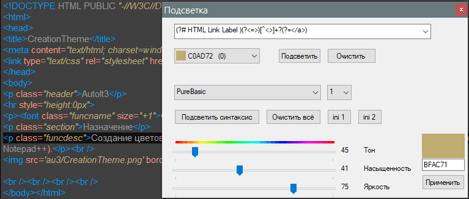

Плагины AkelPad и Notepad++
Плагины AkelPad
Highlight
Подсвечивание текста

Папка Highlight должна быть в той же папке, что и Highlight.dll
Окно Highlight частично блокирует работу AkelPad
Регулярные выражения в ini-файлах могут не работать, адаптировал частично (заменил \w, \v, \h, экранировал \-). Важен порядок рег.выр. при комплексном применении. Также важно, если идентификатор у регулярных выражений одинаков, то последний затирает предыдущие, это тоже не адаптировано. То есть нельзя писать 2 строки с идентификатором 2
2=[\d_a-z]+\$
2=\b\d+\b
Highlight был переделан с ранее созданного плага для Notepad++, поэтому структура кода пока не оптимальная из-за разного подхода подсветки.
На данный момент, если требуется подсветить комплексно, то выбрать "синтаксис" и нажать "Подсветить синтаксис", при этом если выбрать в комбо выбора цвета иной цвет, то можно его регулировать. Если же нажать индивидуальный вариант - кнопку "Подсветить", то регулировка цвета осуществляется для регулярного выражения сверху над кнопкой. Кнопка "Очистить" в одном случае применяется индивидуально для идентификатора, во втором случае для всех идентификаторов.
В комплекте 3 ini-файла - языковой, синтаксис и индивидуальный. Количество цветов определяется пользователем.
ConvKey
Преобразовывает текст из "привет" в "ghbdtn" и наоборот (тоже что TextCorrection). Либо автоматически преобразовывает слово слева от курсора, либо выделить текст вручную и вызвать функцию. Язык определяется по букве справа, а если справа не буква, то перебирается справа-налево до первой буквы, а при отсутствии оной просто ничего не делается.
Help
Плагин позволяет перейти в справку CHM (тоже что Help), связанную с текущим типом документа, и открыть в ней выделенное слово, если оно есть в списке на вкладке "Указатель".
1. Файлы Plugs\Help.dll и папку Plugs\Help поместить в папки плагов
2. Сделать пункт меню или кнопку "Справка" Call("Help::Help") Icon("HH.exe", 0)
3. Выделите слово и нажмите кнопку. Отличие плагина от exe-файла в том что не обязательно выделять слово, достаточно поставить курсор на слово.
Параметры
0 - тихий режим, ни единого сообщения, полезен если нет желания разбираться с путями, а рука автоматом пытается вызвать справку для этого файла и вынуждает закрывать окно.
1 - по умолчанию, выдаёт только важные сообщения, "не найден путь к CHM", "Не найден ini-файл". Если неправильно скопирован плаг или неправильно указаны пути в ini-файле, или портабельная сборка перенесена и прямые пути не работают. Не обязательно указывать этот параметр, оставив пусто, это будет работать как "1".
2 - тест работы плага, выдаёт все возможные сообщения, чтобы найти проблему. Любая причина, по которой не открылась справка.
Пример с параметром:
"Тест плага Справка" Call("Help::Help", 2) Icon("HH.exe", 0)
Плагины Notepad++
TextA
Несколько задач для обработки текста, подробнее....
Если ничего не выделено, то работает со всем текстом документа, а если выделить, то только с выделенным текстом.
Пункты меню:
Удалить дубликаты строк
Удалить дубликаты с подсчётом уникальных
Уникальные строки, которых нет в буфере обмена
Добавить текст в конец строк
Имя файла без расширения в буфер
Вставить дату (ini)
Выделенное в поле замены
Вставить текст
Введите текст для вставки
Замена
Highlight
Подсвечивание текста, подробнее...

DB_RegExp
База регулярных выражений, подробнее....

Клик на строке в списке базы заполняет поля окна поиска и замены. Верхний раскрывающийся список позволяет сортировать рег.выр. по категориям. Открытие ini непосредственно из интерфейса позволяет легко добавлять, удалять, исправлять, кешировать новые. Чтобы обновить список в плагине переоткройте окно плага. Добавить хоткей в "Опции -> Горячие клавиши" для быстрого вызова.
Можно в ini-файле изменить порядок строк или дублировать строки изменяя, а потом нажать "исправить", чтобы номера сделались по порядку. Если дублировать параметры не заботясь, то при захвате данных из интерфейса плагина можно потерять данные, потому что ini должен иметь имя параметра в одном экземпляре.
Help
Подробнее...
Плагин Help предназначен для открытия справки CHM (тоже что Help). В конфигурационном файле Help.ini нужно создать секцию с расширением файла в имени, и указать путь и заголовок справки. Заголовок нужен, чтобы не открывать справку повторно, а просто развернуть окно уже открытой справки. Для использования выделите слово и нажмите Ctrl+Alt+1, откроется CHM и на вкладку "Указатель" вставится слово и будет найдено.
Настройки
[Setting]
Debug=1 - вывод информации об отладки. 0, 1, 2. 0-ничего не выводить совсем, 1-минимум сообщений (неверный путь или заголовок), 2-максимум информации
FindOnPage=0 - чтобы активировать поиск по странице, то есть автоматически будет выделено слово на странице
SearchTab=0 - вместо вкладки "Указатель" открывать вкладку "Поиск"
PathHelp="" - путь к папке с файлами CHM если указаны относительные пути. Если путь не указан, то относительно каталога Notepad++.
ini-файл создаётся автоматически. При наличии файла doLocalConf.xml будет создан в папке Notepad++\plugins\Config, иначе в C:\Users\User\AppData\Roaming\Notepad++\plugins\config.
Так как плаг с поддержкой многоязычности, то надо Help_Lang(Ru).ini переименовать в Help_Lang.ini чтобы включился русский язык.
Другие
AutoCompletion - не актуальный, так как сделан кроссплатформенный инструмент. Подробнее ...
change - пометка изменений строк. Не актуальный, так как появилась внутренняя поддержка этого функционала.
Плагин Help сделан как отдельный исполняемый файл, что позволяет его использовать с любым редактором. Подробнее ...